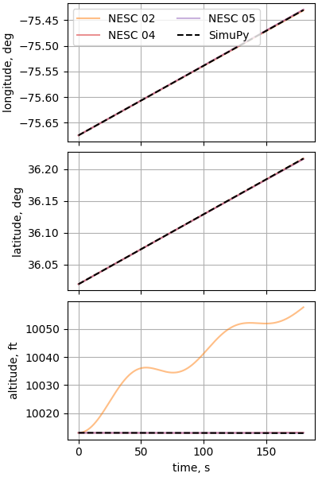
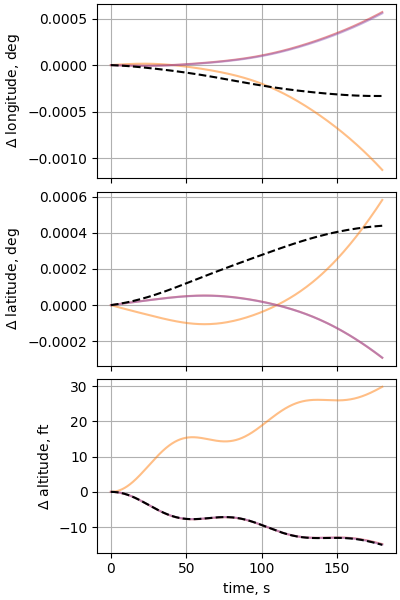
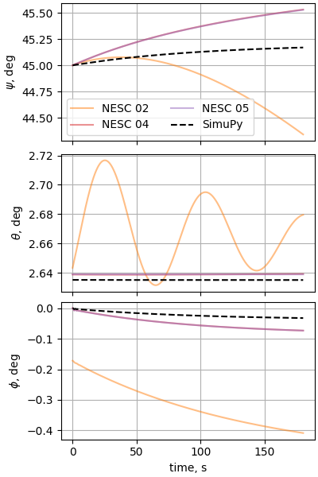
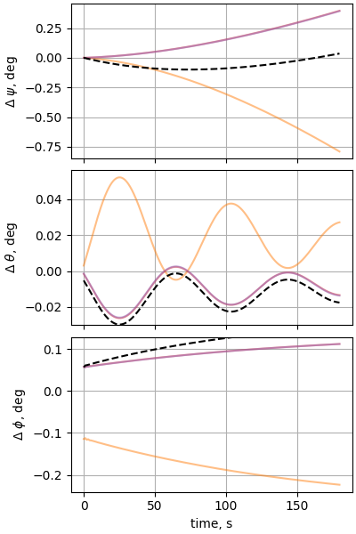
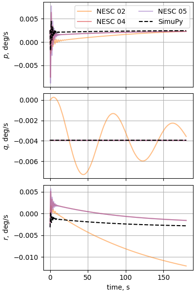
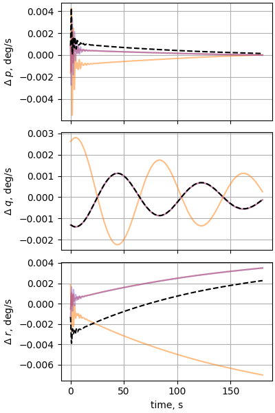
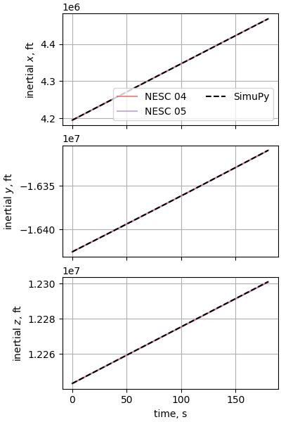
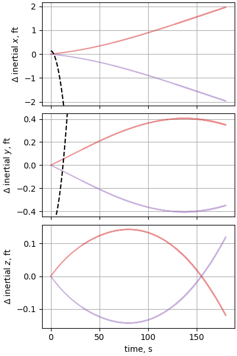
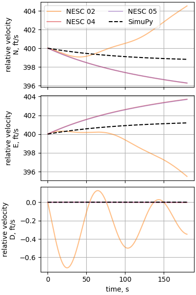
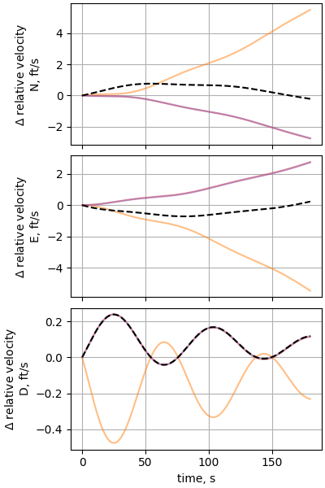

Note
Click here to download the full example code
Case 11: Subsonic F-16 trimmed flight across earth
Verifies |
Atmosphere, air-data calculations |
Gravitation |
J2 |
Geodesy |
WGS-84 rotating |
Atmosphere |
US 1976 STD |
Winds |
still air |
Vehicle |
F-16 (unaugmented) |
Notes |
Initial position is 10,000 ft above KFFA airport on a 45 degree true course. 335.15 KTAS. Stability augmentation off. Test of trim solution. |
In this example, we first find the trim conditions for the F16 in sub-sonic flight, then perform a steady level sight. To find trim, we use scipy’s optimize module to minimize a trim residual.
from simupy.block_diagram import BlockDiagram
from simupy import systems
import simupy_flight
import numpy as np
from scipy import optimize
from nesc_testcase_helper import plot_nesc_comparisons, int_opts, benchmark
from nesc_testcase_helper import ft_per_m, kg_per_slug
The F16_model.F16 class composes the aerodynamic, propulsion, and inertia models into a simupy_flight Vehicle
import F16_model
from F16_control import F16_control
F16_vehicle = F16_model.F16()
Create a dictionary of keyword arguments for the initial condition
spec_ic_args = dict(
phi_D=36.01916667 * np.pi / 180, # latitude
lamda_D=-75.67444444 * np.pi / 180, # longitude
h=10_013 / ft_per_m,
V_N=400.0 / ft_per_m,
V_E=400.0 / ft_per_m,
V_D=0.0 / ft_per_m,
psi=45.0 * np.pi / 180,
theta=2.653814 * np.pi / 180,
phi=0.0 * np.pi / 180,
p_B=0.0 * np.pi / 180,
q_B=0.0 * np.pi / 180,
r_B=0.0 * np.pi / 180,
)
knots_per_mps = 1.94384
Configure the earth model
earth = simupy_flight.Planet(
gravity=simupy_flight.earth_J2_gravity,
winds=simupy_flight.get_constant_winds(),
atmosphere=simupy_flight.atmosphere_1976,
planetodetics=simupy_flight.Planetodetic(
a=simupy_flight.earth_equitorial_radius,
omega_p=simupy_flight.earth_rotation_rate,
f=simupy_flight.earth_f,
),
)
Air density at the surface is used for the equivalent air-speed calculation
rho_0 = earth.atmosphere(0, 0, 0, 0)[0]
Select the feedback channels used for the controller
This is a function generator for the controller (auto-pilot). The generated function uses the DaveML implementation of the controller, which has several configuration options set by the generator.
class F16ControllerBlock:
num_events = 1
dim_state = 0
dim_output = 4
dim_input = 15
initial_condition = np.array([])
def __init__(self, throttleTrim, longStkTrim, sasOn=False, apOn=False, event_t=0.):
self.throttleTrim = throttleTrim
self.longStkTrim = longStkTrim
self.sasOn = sasOn
self.apOn = apOn
self.event_t = event_t
def update_equation_function(self, t, u, event_channels):
return self.__call__(t, u)
def prepare_to_integrate(self, t, u):
return self.__call__(t, u)
def event_equation_function(self, t, u):
return np.array([t - self.event_t])
def output_equation_function(self, t, u):
return self.__call__(t, u)
def __call__(self, t, u):
throttle, longStk, latStk, pedal = 0.0, 0.0, 0.0, 0.0 # pilot command
(
# feedback
alt,
V_T,
alpha,
beta,
psi,
theta,
phi,
pb,
qb,
rb,
# rho to calculate equivalent airspeed
rho,
# commands
keasCmd,
altCmd,
latOffset,
baseChiCmd,
) = u
Vequiv = V_T * np.sqrt(rho / rho_0)
angles = np.array([alpha, beta, phi, theta, psi])
alpha, beta, phi, theta, psi = angles * 180 / np.pi
control_eart = F16_control(
throttle,
longStk,
latStk,
pedal,
self.sasOn,
self.apOn,
keasCmd,
altCmd,
latOffset,
baseChiCmd,
alt * ft_per_m,
Vequiv * knots_per_mps,
alpha,
beta,
phi,
theta,
psi,
pb,
qb,
rb,
self.throttleTrim,
self.longStkTrim,
)
return control_eart
This function computes the trim residual using the
local_translational_trim_residual helper function, which calculates the
accelerations experienced by the vehicle for a given flight condition, longitudinal
stick position, and throttle value.
def eval_trim(flight_condition, longStk, throttle):
kin_out = earth.output_equation_function(0, flight_condition)
controller_func = F16ControllerBlock(
throttleTrim=throttle, longStkTrim=longStk
)
aero_plus_prop_acceleration = simupy_flight.dynamics.dynamics_output_function(
F16_vehicle, 0, *kin_out, *controller_func(0, np.zeros(dim_feedback + 4))
)
gen_accel = aero_plus_prop_acceleration
gen_accel[:3] = earth.local_translational_trim_residual(
*flight_condition[:-3], *aero_plus_prop_acceleration[:-3]
).squeeze()
return gen_accel
This function uses optimize.minimize() to minimize the trim redisual. It uses the throttle, longitudinal stick position, pitch angle, and optionally the roll angle, as free variables to achieve trim. The euler angles are passed through the flight condition variable.
def run_trimmer(flight_ic_args, throttle_ic=0.0, longStk_ic=0.0, allow_roll=False):
len_vars = 3 + allow_roll
psi, theta_ic, phi_ic = (
flight_ic_args["psi"],
flight_ic_args["theta"],
flight_ic_args["phi"],
)
initial_guess = np.zeros(len_vars)
initial_guess[0] = theta_ic
initial_guess[1] = throttle_ic
initial_guess[2] = longStk_ic
extra_index = 3
if allow_roll:
initial_guess[extra_index] = phi_ic
extra_index += 1
def parse_x(x):
theta, throttle, longStk = x[:3]
extra_index = 3
if allow_roll:
phi = x[extra_index]
extra_index += 1
else:
phi = phi_ic
return theta, phi, longStk, throttle
weighting_matrix = np.eye(6)
aileron, rudder = 0.0, 0.0
def trim_opt_func(x):
eval_args = flight_ic_args.copy()
theta, phi, longStk, throttle = parse_x(x)
eval_args["theta"] = theta
eval_args["phi"] = phi
flight_condition = earth.ic_from_planetodetic(**eval_args)
return np.linalg.norm(
weighting_matrix @ eval_trim(flight_condition, longStk, throttle), ord=2
)
opt_res = optimize.minimize(
trim_opt_func,
initial_guess,
tol=1e-12,
options={
"disp": True,
"adaptive": True,
"fatol": 1e-12,
"maxiter": 20_000,
"xatol": 1e-12,
},
method="Nelder-Mead",
)
opt_theta, opt_phi, opt_longStk, opt_throttle = opt_result = parse_x(opt_res.x)
opt_args = flight_ic_args.copy()
opt_args["theta"] = opt_theta
opt_args["phi"] = opt_phi
opt_flight_condition = earth.ic_from_planetodetic(**opt_args)
print(
"pitch: %.4e roll: %.4e longStk: %.4f throttle: %.4f"
% (
opt_theta * 180 / np.pi,
opt_phi * 180 / np.pi,
opt_longStk * 100,
opt_throttle * 100,
)
)
print(
"accelerations:\n",
eval_trim(opt_flight_condition, opt_longStk, opt_throttle).reshape((2, 3)),
)
return opt_args, np.array([opt_throttle, opt_longStk])
Run the trimmer to determine the initial condition for the simulation
opt_args, opt_ctrl = run_trimmer(
spec_ic_args, throttle_ic=0.0, longStk_ic=0.0, allow_roll=False
)
trimmed_flight_condition = earth.ic_from_planetodetic(**opt_args)
trimmed_KEAS = (
earth.output_equation_function(0, trimmed_flight_condition)[earth.V_T_idx]
* np.sqrt(
earth.output_equation_function(0, trimmed_flight_condition)[earth.rho_idx]
/ rho_0
)
* knots_per_mps
)
earth.initial_condition = trimmed_flight_condition
Out:
Optimization terminated successfully.
Current function value: 0.006500
Iterations: 299
Function evaluations: 562
pitch: 2.6351e+00 roll: 0.0000e+00 longStk: 12.9236 throttle: 13.7561
accelerations:
[[-4.59610112e-03 4.59610020e-03 1.01317177e-10]
[-2.98437663e-09 4.11189587e-09 2.12618714e-09]]
Configure the controller using the trim settings. This requires additional blocks to generate command signals at the trimmed value
controller_block = F16ControllerBlock(*opt_ctrl)
keasCmdOutput = np.array([trimmed_KEAS])
keasCmdBlock = systems.SystemFromCallable(lambda *args: keasCmdOutput, 0, 1)
altCmdOutput = np.array([spec_ic_args["h"] * ft_per_m])
altCmdBlock = systems.SystemFromCallable(lambda *args: altCmdOutput, 0, 1)
baseChiCmdOutput = np.array([spec_ic_args["psi"] * 180 / np.pi])
baseChiCmdBlock = systems.SystemFromCallable(lambda *args: baseChiCmdOutput, 0, 1)
This block computes the rate of lateral offset error, which is integrated and used by the auto-pilot to compute the heading to drive the offset to zero.
def latOffsetStateEquation(t, x, u):
chi_cmd, V_N, V_E = u
V_ground_magnitude = np.sqrt(V_N**2 + V_E**2)
V_ground_heading = np.arctan2(V_E, V_N)
return V_ground_magnitude * np.sin(V_ground_heading - chi_cmd * np.pi / 180)
def latOffsetOutputEquation(t, x):
return x * ft_per_m
latOffsetBlock = systems.DynamicalSystem(
state_equation_function=latOffsetStateEquation,
output_equation_function=latOffsetOutputEquation,
dim_state=1,
dim_input=3,
dim_output=1,
)
Build a block diagram of the planet kinematics block, the F16 vehicle block, the base controller block, and the various command generating blocks and connect them appropriately.
BD = BlockDiagram(
earth,
F16_vehicle,
controller_block,
keasCmdBlock,
altCmdBlock,
latOffsetBlock,
baseChiCmdBlock,
)
BD.connect(earth, F16_vehicle, inputs=np.arange(earth.dim_output))
BD.connect(F16_vehicle, earth, inputs=np.arange(F16_vehicle.dim_output))
BD.connect(
controller_block,
F16_vehicle,
inputs=np.arange(earth.dim_output, earth.dim_output + 4),
)
BD.connect(
earth,
controller_block,
outputs=controller_feedback_indices,
inputs=np.arange(dim_feedback),
)
BD.connect(keasCmdBlock, controller_block, inputs=[dim_feedback + 0])
BD.connect(altCmdBlock, controller_block, inputs=[dim_feedback + 1])
BD.connect(latOffsetBlock, controller_block, inputs=[dim_feedback + 2])
BD.connect(baseChiCmdBlock, controller_block, inputs=[dim_feedback + 3])
Simulate and assess the results
int_opts["nsteps"] = 5_000
if __name__ == "__main__":
with benchmark() as b:
res = BD.simulate(180, integrator_options=int_opts)
plot_nesc_comparisons(res, "11")
- 
- 
- 
- 
- 
- 
- 
- 
- 
- 
Out:
time to simulate: 66.951 s
missing eiPosition_ft_X for SIM 02
missing eiPosition_ft_Y for SIM 02
missing eiPosition_ft_Z for SIM 02
Total running time of the script: ( 1 minutes 12.445 seconds)